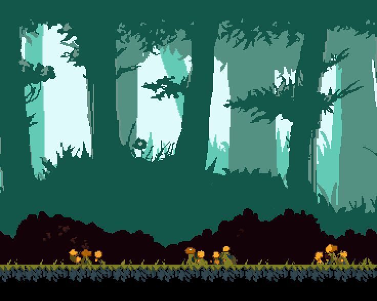
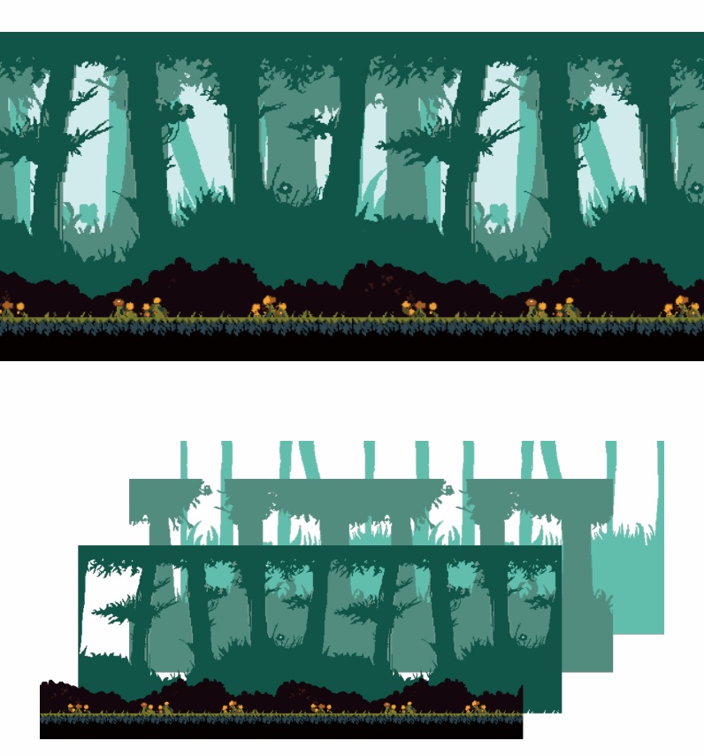
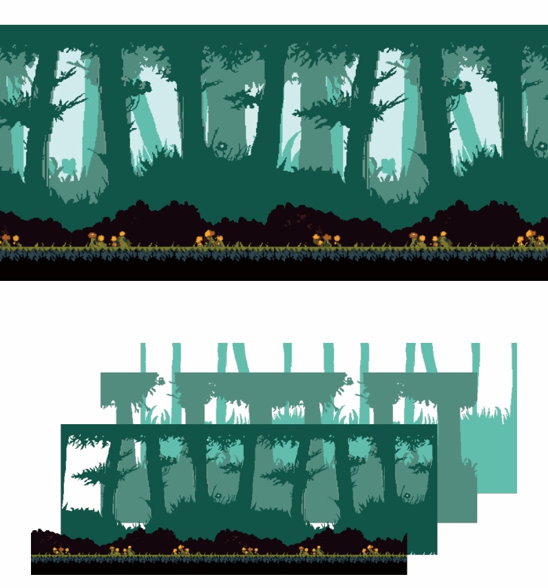
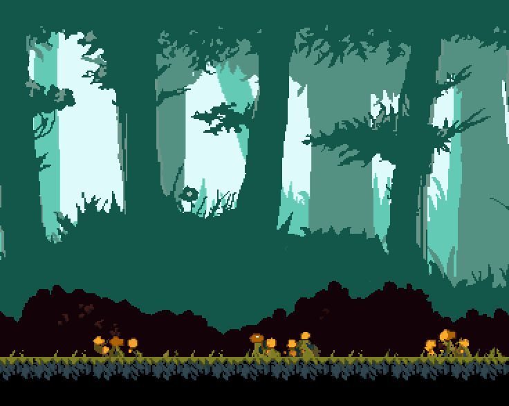
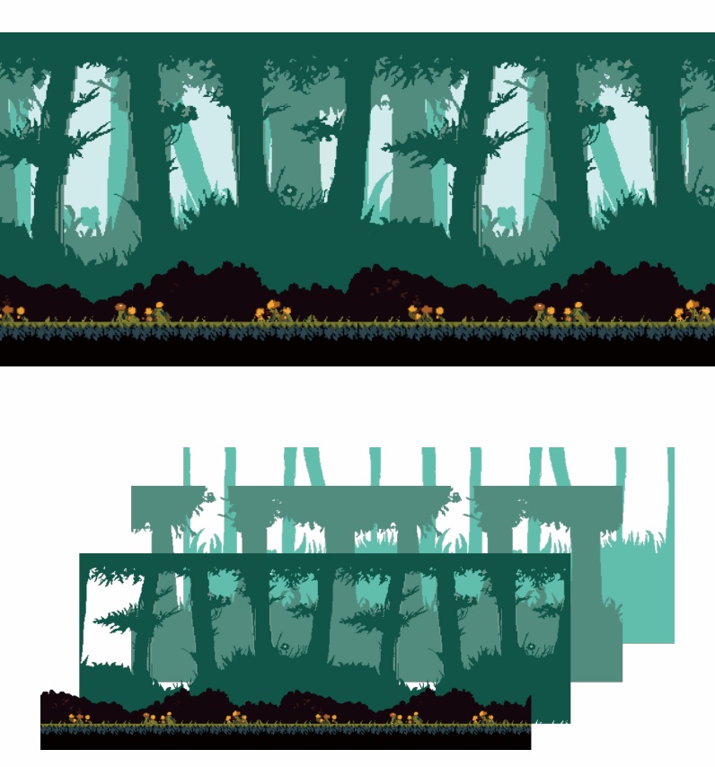

Forest
2017年6月
レイヤーごとに別の速度で動くようにして、奥行きのあるアニメーションを作成しました。外に近づくにつれて植物の色が明るくなるようにして奥行きがあるのが分かりやすいようにしました。
proccesing・ドット絵作成
 

2017年6月
レイヤーごとに別の速度で動くようにして、奥行きのあるアニメーションを作成しました。外に近づくにつれて植物の色が明るくなるようにして奥行きがあるのが分かりやすいようにしました。
proccesing・ドット絵作成

